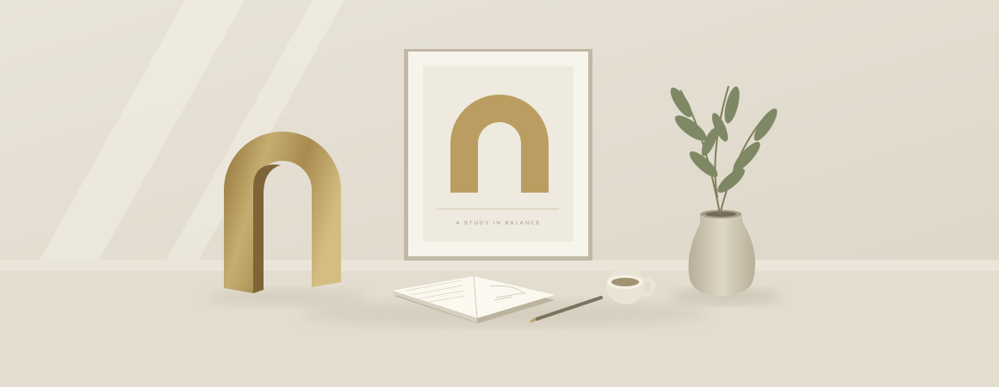

Clarity before decoration.
Start with the problem and make the important things obvious. A simple, useful idea is a good foundation for everything else.
A little about me
I’m Keenan. I like good questions, thoughtful details, and the feeling of making something that works just right.

The short version
Somewhere between a blank page and a finished product is the part I love most: figuring it out.
I’m drawn to design and development because they ask different questions about the same thing. What should this feel like? How should it work? What would make it simpler?
My approach starts with listening and understanding the problem. From there, I connect ideas, explore possibilities, and keep refining until the details feel purposeful.
This portfolio is an evolving collection of those explorations. A place to share what I’m making, document how I think, and stay open to what’s next.
A few things I come back to
Start with the problem and make the important things obvious. A simple, useful idea is a good foundation for everything else.
A thoughtful interaction, the right amount of space, a line of copy. The details add up to how an experience feels.
Ask another question. Try a different direction. There’s always something to learn, and usually a better way to make it.
Where I like to spend my time
Enough about me
I’d love to hear what you have in mind.
Say hello